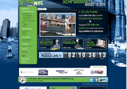

Kraus Creative wanted to update the previous SEA Paddle NYC website so that the client could more easily maintain the site. Kraus Creative already had a design ready so only the implementation of the design was needed. Jacob implemented the Drupal theme for SEA Paddle NYC brilliantly and all that was left to do was to implement the new features. The new features included a slideshow on the front page, a sponsor carousel on the front page, an area to embed Flickr sets, an area to embed Youtube videos and a blog / news area.